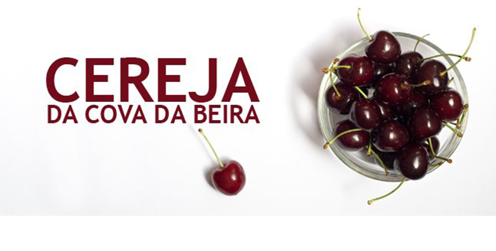

About me
Toni Filipe Gonçalves Barreiros (Alpedrinha, Portugal 1977)
I live in Fundão - Portugal, land of the best cherries in the World...
Architect
- Fundão City Hall
- Public sector: Department of Innovation and Investment
- Licensing of architecture design projects; Civil code; Construction – legal framework; Accessibilities design plans; Building energetic performance; Urban planning
- Coordinator and manager of the Fab Lab Aldeias do Xisto - Fundão
- Coordinator and manager of the Cowork Fundão
- Coordinator and manager of the Business Incubation - Fundão
- Coordinator of the project New Center Business - Fundão
- Student of the Fab Academy program 2017 (http://www.fabacademy.org/)
- President of the Theater Association of Alpedrinha
- Director of the Youth Organization Fun Jovem
- Director of the Terras da Gardunha Association
- Member of the city hall Alpedrinha
- Organization and Event Production